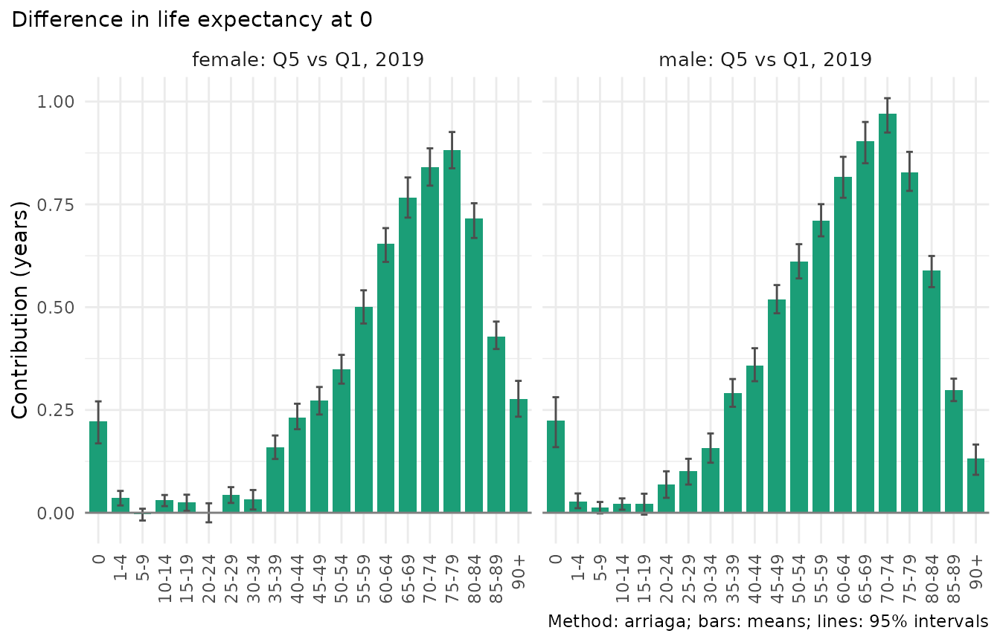
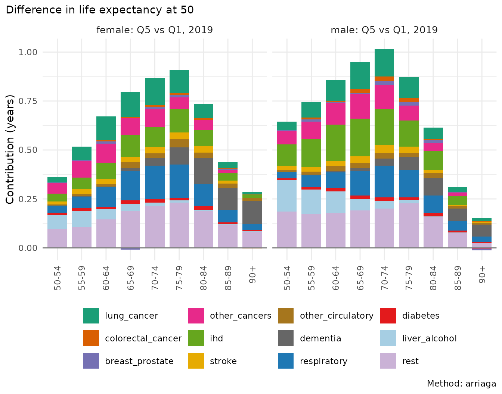
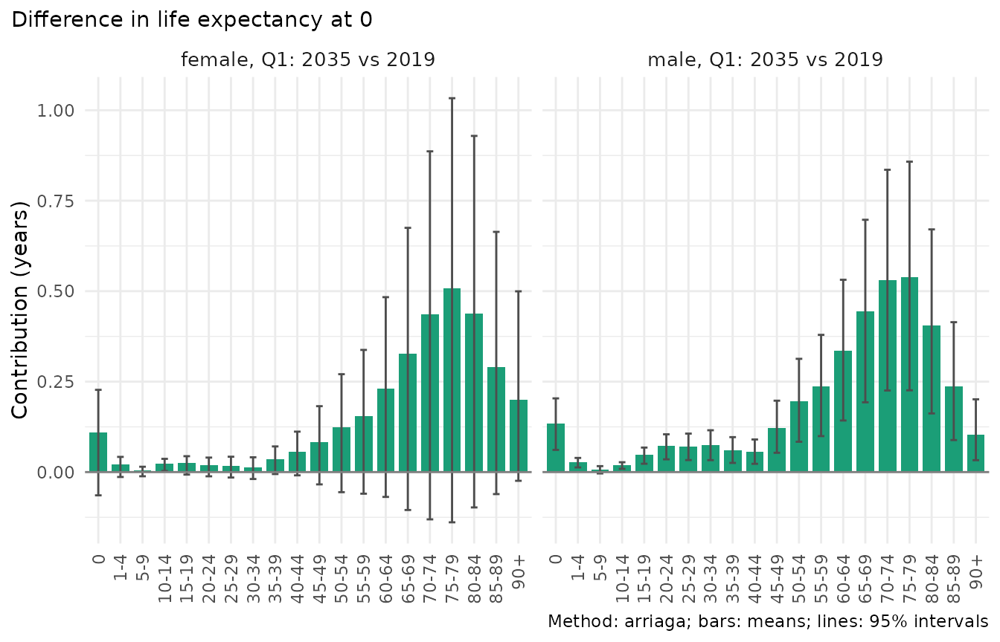
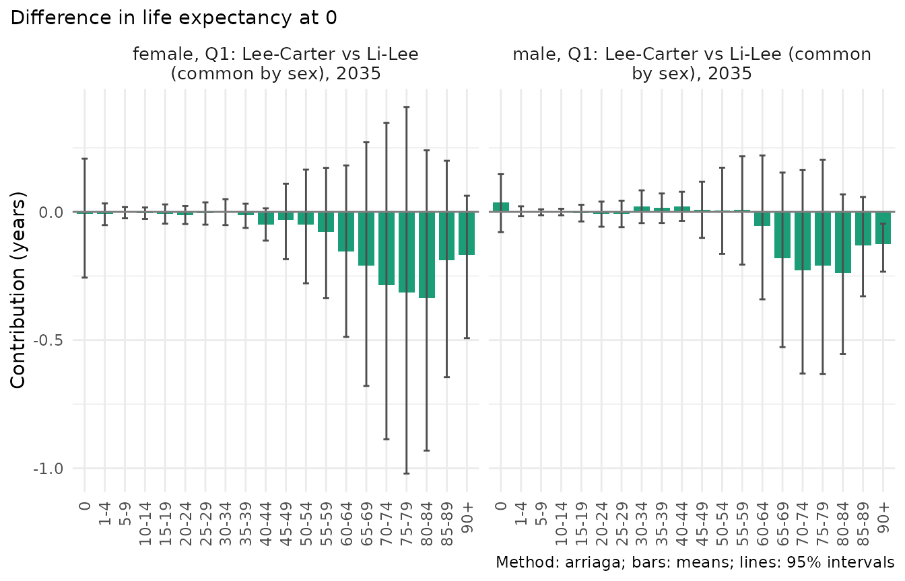

A difference in life expectancy, between deprivation quintiles,
between two years or between two forecasts, is the sum of differences in
death rates at many ages and from many causes. A decomposition
attributes it to those ages and causes, and, for populations made of
subgroups, separates the effect of the subgroups’ mortality from the
effect of their composition. In mortensor this is a post-processing
step, mt_decompose(), that works on observed data, on
forecast draws, and on both together. Forecasts are decomposed draw by
draw, so every contribution has an interval.
| Method | Decomposes | Reference |
|---|---|---|
"arriaga" (default for life expectancy) |
life expectancy, by age (and cause) | Arriaga (1984), symmetric form as in Riffe et al. (2024) |
"horiuchi" |
any function of the rates | Horiuchi, Wilmoth and Pletcher (2008) |
"stepwise" |
any function of the rates | Andreev, Shkolnikov and Begun (2002) |
"kitagawa" |
crude death rate: rates and age structure | Kitagawa (1955) |
groups with composition = "radix"
|
life expectancy of a population of subgroups fixed from the start (sex, education): subgroup rates and composition | Riffe, Tursun-zade and Trias Llimós (2024), “Arriaga meets Kitagawa” |
groups with composition = "pooled"
|
life expectancy of the pooled rates (areas, regions): subgroup rates and age-specific composition | parametrisation specific to this package (reference unknown); line integral of Horiuchi et al. (2008) |
library(mortensor)
library(data.table)
x <- mt_data(deaths = ons_data, population = ons_data, by = c("sex", "imd_decile"), age = "age_group",
value = c(deaths = "all_causes", population = "population"))
x <- mt_as_exposure(x, type = "midyear")
x <- mt_group_levels(x, "imd_decile", function(d) paste0("Q", ceiling(as.numeric(d) / 2)), name = "quintile")The data are the ONS deaths and populations of England by sex, 5-year
age group and IMD quintile, 2001-2019 (ons_data; Source:
Office for National Statistics licensed under the Open Government
Licence v3.0). Q1 is the most deprived quintile.
The deprivation gap by age
Each quintile compared with Q1 in 2019, with 200 Poisson draws of the deaths for the intervals:
gap <- mt_decompose(x, var = "quintile", ref = "Q1", periods = 2019, n_draws = 200)
gap
#> <mt_decomposition> life expectancy at 0, method arriaga; 8 comparison(s), means over 200 draws
#> comparison sex from to period from_value to_value difference
#> <int> <char> <char> <char> <num> <num> <num> <num>
#> 1: 1 female Q1 Q2 2019 79.825 82.501 2.676
#> 2: 2 female Q1 Q3 2019 79.825 83.929 4.103
#> 3: 3 female Q1 Q4 2019 79.825 85.020 5.195
#> 4: 4 female Q1 Q5 2019 79.825 86.289 6.464
#> 5: 5 male Q1 Q2 2019 75.429 78.596 3.167
#> 6: 6 male Q1 Q3 2019 75.429 80.604 5.175
#> 7: 7 male Q1 Q4 2019 75.429 81.818 6.389
#> 8: 8 male Q1 Q5 2019 75.429 83.094 7.664
#> difference_q0.025 difference_q0.5 difference_q0.975 sum_contributions
#> <num> <num> <num> <num>
#> 1: 2.515 2.682 2.826 2.676
#> 2: 3.964 4.109 4.249 4.103
#> 3: 5.027 5.198 5.335 5.195
#> 4: 6.318 6.466 6.615 6.464
#> 5: 3.001 3.166 3.332 3.167
#> 6: 5.013 5.168 5.312 5.175
#> 7: 6.223 6.383 6.564 6.389
#> 8: 7.517 7.657 7.831 7.664
#> max_residual
#> <num>
#> 1: 1.3e-14
#> 2: 1.7e-14
#> 3: 1.5e-14
#> 4: 1.6e-14
#> 5: 1.6e-14
#> 6: 1.5e-14
#> 7: 1.6e-14
#> 8: 1.4e-14The totals list one comparison per row: the life expectancy of the
reference (from_value) and of the level
(to_value), their difference with its interval, and the sum
of the age contributions, which equals the difference
(max_residual is the largest discrepancy over draws).
Values are means over the draws; quantiles are in the columns
difference_q* and in summary().
summary(gap, by = "age") gives the contributions; the plot
shows them for the gap between Q5 and Q1:
mt_plot_decomposition(gap, by = "age", comparisons = list(to = "Q5"))
s <- summary(gap, by = "age")[to == "Q5"]
s[, band := cut(as.numeric(sub("[-+].*", "", age)), c(-1, 39, 64, 84, Inf),
labels = c("0-39", "40-64", "65-84", "85+"))]
dcast(s[, .(contribution = round(sum(mean), 2)), by = .(sex, band)], sex ~ band, value.var = "contribution")
#> Key: <sex>
#> sex 0-39 40-64 65-84 85+
#> <char> <num> <num> <num> <num>
#> 1: female 0.55 2.01 3.20 0.70
#> 2: male 0.93 3.01 3.29 0.43The gap of 6.5 years for women and 7.7 years for men comes mostly from ages 40 to 84 (5.2 and 6.3 years): deaths at working ages and in early old age are much more frequent in Q1. Ages below 40 add 0.6 years for women and 0.9 years for men; infant mortality alone adds 0.2 years for women. With Poisson draws of the observed deaths, the intervals of single ages are narrow.
The methods agree closely. Symmetric Arriaga and symmetric stepwise replacement are identical for life expectancy, because Arriaga’s decomposition is stepwise replacement from the oldest to the youngest age; the line integral assigns interactions between ages slightly differently:
meth <- rbindlist(lapply(c("arriaga", "horiuchi", "stepwise"), function(m) {
d <- mt_decompose(x, var = "quintile", ref = "Q1", periods = 2019, method = m)
summary(d, by = "age")[to == "Q5" & sex == "female", .(age, method = m, mean = round(mean, 3))]
}))
meth[, age := factor(age, unique(age))]
dcast(meth, age ~ method, value.var = "mean")[age %in% c("0", "40-44", "60-64", "75-79", "90+")]
#> Key: <age>
#> age arriaga horiuchi stepwise
#> <fctr> <num> <num> <num>
#> 1: 0 0.221 0.221 0.221
#> 2: 40-44 0.232 0.231 0.232
#> 3: 60-64 0.651 0.650 0.651
#> 4: 75-79 0.881 0.886 0.881
#> 5: 90+ 0.276 0.272 0.276Causes behind the gap
Causes of death are a stratum variable whose rates add up to all
causes. cause names it. The total level
("all") is left out because
mt_group_levels(total = "all") records it in the data;
without such a record (or a hierarchy),
mt_decompose() stops rather than count all causes as one
more cause. At ages 50 and over (as in “Inequality in England”):
causes <- names(ons_data)[-(1:7)]
xc <- mt_data(deaths = ons_data, population = ons_data, by = c("sex", "imd_decile", "cause"),
age = "age_group", value = list(deaths = c(all = "all_causes", causes), population = "population"))
xc <- mt_as_exposure(xc, type = "midyear")
xc <- mt_subset(xc, ages = c(50, Inf), periods = c(2019, 2019))
xc <- mt_group_levels(xc, "imd_decile", function(d) paste0("Q", ceiling(as.numeric(d) / 2)), name = "quintile")
xc <- mt_group_levels(xc, "cause", ons_cause_groups, other = "rest", total = "all", additive = "rates")
gc <- mt_decompose(xc, var = "quintile", ref = "Q1", cause = "cause")
sc <- summary(gc, by = "cause")[to == "Q5"]
dcast(sc, cause ~ sex, value.var = "mean")[order(-female), lapply(.SD, function(v) if (is.numeric(v)) round(v, 2) else v)]
#> cause female male
#> <char> <num> <num>
#> 1: rest 1.37 1.42
#> 2: respiratory 0.89 0.77
#> 3: lung_cancer 0.71 0.71
#> 4: ihd 0.65 1.09
#> 5: other_cancers 0.54 0.65
#> 6: dementia 0.52 0.34
#> 7: liver_alcohol 0.28 0.51
#> 8: stroke 0.21 0.21
#> 9: other_circulatory 0.18 0.17
#> 10: diabetes 0.12 0.12
#> 11: colorectal_cancer 0.04 0.09
#> 12: breast_prostate 0.04 0.07
mt_plot_decomposition(gc, by = "age", fill = "cause", comparisons = list(to = "Q5"))
Each age contribution is split over the causes in proportion to their
rate differences (Riffe et al. 2024, eqs. 12-13). Of the gap in life
expectancy at 50, chronic lower respiratory diseases, lung cancer and
ischaemic heart disease contribute most among the named causes, for both
sexes, and the remaining causes together (rest) contribute
a large share. Causes with higher rates in Q5 than in Q1 would have
negative contributions.
Change over time and the composition of England
The life expectancy of a population of subgroups changes because the
mortality of every subgroup changes and because the population shifts
between subgroups. groups names the subgroups, and
composition decides which life expectancy of the whole
population is decomposed. The choice matters, so it has no default.
Subgroups fixed from the start of life:
composition = "radix". Riffe, Tursun-zade and
Trias Llimós (2024) treat the life expectancy of a population as the
mean of the subgroups’ life expectancies, weighted by their shares at
the starting age, as if subgroup life tables were blended at the radix.
A Kitagawa decomposition of that mean separates the composition from the
change within each subgroup, which is then split by age. The authors
state the condition: membership must be fixed from the starting age on,
and later shares must change through mortality only, as for sex,
education from age 30 or country of birth. Sex is such a subgroup: the
life expectancy at birth of both sexes in each quintile, with the sex
ratio at birth as the composition:
both <- mt_decompose(x, periods = c(2001, 2019), groups = "sex", composition = "radix")
both
#> <mt_decomposition> life expectancy at 0, method arriaga, radix composition; 5 comparison(s), 1 draw
#> Values: means of the subgroups' values weighted by their shares at age 0 (subgroups blended at the radix),
#> not the values of the pooled rates.
#> comparison quintile from to from_value to_value difference
#> <int> <char> <char> <char> <num> <num> <num>
#> 1: 1 Q1 2001 2019 74.598 77.572 2.974
#> 2: 2 Q2 2001 2019 77.149 80.503 3.354
#> 3: 3 Q3 2001 2019 78.835 82.218 3.383
#> 4: 4 Q4 2001 2019 79.860 83.374 3.514
#> 5: 5 Q5 2001 2019 80.995 84.643 3.647
#> sum_contributions max_residual
#> <num> <num>
#> 1: 2.974 1.8e-15
#> 2: 3.354 8.4e-15
#> 3: 3.383 1.4e-14
#> 4: 3.514 4.4e-15
#> 5: 3.647 8.0e-15
summary(both, by = c("component", "group"))[, .(quintile, component, group, mean = round(mean, 3))]
#> quintile component group mean
#> <char> <char> <char> <num>
#> 1: Q1 rate female 1.060
#> 2: Q1 rate male 1.942
#> 3: Q1 composition <NA> -0.028
#> 4: Q2 rate female 1.374
#> 5: Q2 rate male 1.983
#> 6: Q2 composition <NA> -0.003
#> 7: Q3 rate female 1.409
#> 8: Q3 rate male 1.988
#> 9: Q3 composition <NA> -0.014
#> 10: Q4 rate female 1.479
#> 11: Q4 rate male 2.038
#> 12: Q4 composition <NA> -0.004
#> 13: Q5 rate female 1.686
#> 14: Q5 rate male 1.978
#> 15: Q5 composition <NA> -0.017The printout states what the values are: means of women’s and men’s life expectancy weighted by the sex ratio at birth, not the life expectancy of the pooled rates. In every quintile men contributed more to the rise than women (in Q1 1.9 against 1.1 years); the sex ratio at birth hardly changed, so its composition effect is a few hundredths of a year.
Areas and other changing groups:
composition = "pooled". Deprivation quintiles are
areas: people move between them, and areas change quintile with each IMD
version. The condition of the radix version does not hold. The pooled
version decomposes the life expectancy of the pooled rates of England
(the quintiles weighted by their population at each age, as in published
life tables; “current rates” in Vaupel’s terms, while the radix version
of Riffe et al. describes “current conditions”). The rates of every
quintile and age and the shares at every age are the parameters of a
line-integral decomposition (Horiuchi et al. 2008). This parametrisation
is specific to this package (reference unknown); others would split the
difference differently between rates and composition:
eng <- mt_decompose(x, periods = c(2001, 2019), groups = "quintile", composition = "pooled")
eng
#> <mt_decomposition> life expectancy at 0, method horiuchi, pooled composition; 2 comparison(s), 1 draw
#> Values: of the pooled rates (subgroups weighted by their shares at each age). Pooled composition:
#> a parametrisation specific to this package (reference unknown), decomposed with the line
#> integral of Horiuchi et al. (2008) or stepwise replacement.
#> comparison sex from to from_value to_value difference
#> <int> <char> <char> <char> <num> <num> <num>
#> 1: 1 female 2001 2019 80.649 83.631 2.982
#> 2: 2 male 2001 2019 76.030 79.981 3.951
#> sum_contributions max_residual
#> <num> <num>
#> 1: 2.982 3.6e-05
#> 2: 3.951 7.4e-05
summary(eng, by = c("component", "group"))[, .(sex, component, group, mean = round(mean, 3))]
#> sex component group mean
#> <char> <char> <char> <num>
#> 1: female rate Q1 0.462
#> 2: female rate Q2 0.568
#> 3: female rate Q3 0.601
#> 4: female rate Q4 0.615
#> 5: female rate Q5 0.635
#> 6: female composition <NA> 0.101
#> 7: male rate Q1 0.854
#> 8: male rate Q2 0.799
#> 9: male rate Q3 0.785
#> 10: male rate Q4 0.783
#> 11: male rate Q5 0.696
#> 12: male composition <NA> 0.033Life expectancy at birth of England rose by 3.0 years for women and 4.0 years for men. Every quintile contributed about half a year or more; for men, Q1 contributed most. The composition effect is positive and small (0.10 and 0.03 years). Applied to the quintiles, the radix version would give a negative composition effect, because the shares at birth and at older ages moved in opposite directions:
eng_radix <- mt_decompose(x, periods = c(2001, 2019), groups = "quintile", composition = "radix")
rbind(summary(eng, by = "component")[, .(composition = "pooled", sex, component, mean = round(mean, 3))],
summary(eng_radix, by = "component")[, .(composition = "radix", sex, component, mean = round(mean, 3))])
#> composition sex component mean
#> <char> <char> <char> <num>
#> 1: pooled female rate 2.881
#> 2: pooled female composition 0.101
#> 3: pooled male rate 3.917
#> 4: pooled male composition 0.033
#> 5: radix female rate 2.817
#> 6: radix female composition -0.096
#> 7: radix male rate 3.870
#> 8: radix male composition -0.128
E <- mt_array(x, "exposure")
women <- x$strata$label[x$strata$sex == "female"]
round(rbind(birth_2001 = E["0", "2001", women], birth_2019 = E["0", "2019", women],
age75_2001 = E["75-79", "2001", women], age75_2019 = E["75-79", "2019", women]) /
rep(c(sum(E["0", "2001", women]), sum(E["0", "2019", women]), sum(E["75-79", "2001", women]),
sum(E["75-79", "2019", women])), 5), 3)
#> female.Q1 female.Q2 female.Q3 female.Q4 female.Q5
#> birth_2001 0.249 0.204 0.184 0.178 0.184
#> birth_2019 0.252 0.223 0.195 0.175 0.156
#> age75_2001 0.188 0.200 0.211 0.208 0.193
#> age75_2019 0.143 0.175 0.211 0.232 0.239At birth the share of Q5 fell (from 18% to 16% for girls), while at ages 75-79, where many deaths occur, it rose from 19% to 24% and the share of Q1 fell from 19% to 14%. The radix version treats the shares at birth as the composition of the whole population, which is wrong for areas. The composition effect is a single number (radix) or one per age (pooled): the separate composition terms of the subgroups are not identified.
Forecasts
Li-Lee forecasts to 2035, decomposed draw by draw. With draws,
periods can combine an observed year (held in the draws)
with forecast years:
fc <- mt_forecast(mt_fit(li_lee(common_by = "sex"), x), to = 2035, n_draws = 500, seed = 1)
change <- mt_decompose(fc, periods = c(2019, 2035))
summary(change, by = NULL)[, .(sex, quintile, from_value, to_value, difference, jump_off)]
#> sex quintile from_value to_value difference jump_off
#> <char> <char> <num> <num> <num> <num>
#> 1: female Q1 79.83321 83.38002 3.546810 0.42834663
#> 2: female Q2 82.49875 85.19000 2.691251 0.24430512
#> 3: female Q3 83.93153 86.29470 2.363171 0.08339506
#> 4: female Q4 85.01728 87.04342 2.026131 -0.13923362
#> 5: female Q5 86.29508 87.95801 1.662930 -0.34119674
#> 6: male Q1 75.43067 79.56163 4.130958 0.41338747
#> 7: male Q2 78.59779 82.07083 3.473034 0.14018639
#> 8: male Q3 80.60501 83.66165 3.056633 -0.04412830
#> 9: male Q4 81.82001 84.69466 2.874653 -0.06719945
#> 10: male Q5 83.08997 85.79980 2.709830 -0.07113273A change from an observed to a forecast year contains the step from
the observed rates of 2019 to the model’s fitted rates of 2019 (the
jump-off, see mt_jump_off()), and with it the noise of the
observed year. Column jump_off gives its share: of the
forecast gain of 3.5 years for women in Q1, 0.4 years come from this
step. observed = "fitted" decomposes the model’s change
alone:
change_fit <- mt_decompose(fc, periods = c(2019, 2035), observed = "fitted")
summary(change_fit, by = NULL)[, .(sex, quintile, from_value, to_value, difference, difference_q0.025,
difference_q0.975)]
#> sex quintile from_value to_value difference difference_q0.025
#> <char> <char> <num> <num> <num> <num>
#> 1: female Q1 80.26155 83.38002 3.118463 -0.9029978
#> 2: female Q2 82.74305 85.19000 2.446946 -1.1600297
#> 3: female Q3 84.01493 86.29470 2.279776 -1.0828860
#> 4: female Q4 84.87805 87.04342 2.165365 -1.0599289
#> 5: female Q5 85.95388 87.95801 2.004127 -1.0005026
#> 6: male Q1 75.84405 79.56163 3.717571 1.5582410
#> 7: male Q2 78.73798 82.07083 3.332848 1.4124004
#> 8: male Q3 80.56089 83.66165 3.100761 1.3525203
#> 9: male Q4 81.75281 84.69466 2.941852 1.2555216
#> 10: male Q5 83.01884 85.79980 2.780963 1.1909061
#> difference_q0.975
#> <num>
#> 1: 6.627991
#> 2: 5.589562
#> 3: 5.175859
#> 4: 4.898247
#> 5: 4.627423
#> 6: 5.960220
#> 7: 5.302733
#> 8: 4.892532
#> 9: 4.669059
#> 10: 4.396472
mt_plot_decomposition(change_fit, by = "age", comparisons = list(quintile = "Q1"))
The model’s gain for women in Q1 (3.1 years) comes mostly from ages
50 to 84. The bars give the mean contribution and the lines the 95%
interval of each age over the draws. The intervals are wide and include
zero at most ages: the common trend of Li-Lee is uncertain 16 years
ahead, and it moves all ages together, so the uncertainty of the ages
adds up in the total. observed = "poisson" would add the
sampling uncertainty of the observed year.
The gap between Q5 and Q1 in 2019 and in 2035, and its change. For
the change, summary(change = ) subtracts the two
decompositions draw by draw:
g <- mt_decompose(fc, var = "quintile", ref = "Q1", periods = c(2019, 2035))
summary(g, by = NULL)[to == "Q5", .(sex, period, difference, difference_q0.025, difference_q0.975, jump_off)]
#> sex period difference difference_q0.025 difference_q0.975 jump_off
#> <char> <num> <num> <num> <num> <num>
#> 1: female 2019 6.461871 6.461871 6.461871 0.7695434
#> 2: female 2035 4.577992 3.649408 5.662527 NA
#> 3: male 2019 7.659303 7.659303 7.659303 0.4845202
#> 4: male 2035 6.238175 5.633736 6.807403 NA
g_fit <- mt_decompose(fc, var = "quintile", ref = "Q1", periods = c(2019, 2035), observed = "fitted")
summary(g_fit, by = NULL, change = c(2019, 2035))[to == "Q5", .(sex, period, from_value, to_value, difference,
difference_q0.025, difference_q0.975)]
#> sex period from_value to_value difference difference_q0.025
#> <char> <char> <num> <num> <num> <num>
#> 1: female 2019 to 2035 5.692328 4.577992 -1.1143361 -2.042920
#> 2: male 2019 to 2035 7.174783 6.238175 -0.9366078 -1.541046
#> difference_q0.975
#> <num>
#> 1: -0.02980065
#> 2: -0.36737929Li-Lee forecasts a female gap of 4.6 years in 2035, against 6.5
observed in 2019. Of this narrowing of 1.9 years, 0.8 years is the
jump-off: the Li-Lee fit of 2019 already puts the gap at 5.7 years. The
model’s own narrowing, from the fitted 2019 gap, is 1.1 years (95%
interval 0.03 to 2.0): the deviations of Q1 from the common trend return
towards their average. The vignette “Inequality in England” shows that
in 2010-2019 the gap did not behave like this, and that Li-Lee forecast
it poorly. anchored() starts the forecast from the observed
rates of 2019 and keeps this offset in every forecast year (Lee and
Miller 2001); the gap then narrows only by the model’s own change.
Two forecasts of the same year are compared by giving the second as
y. Their draws are independent, so they are shuffled before
they are paired (pairing = "independent"). Lee-Carter per
quintile against Li-Lee, for 2035:
fl <- mt_forecast(mt_fit(lee_carter(), x), to = 2035, n_draws = 500, seed = 1)
mm <- mt_decompose(fc, fl, periods = 2035)
summary(mm, by = NULL)[sex == "female", .(quintile, from_value, to_value, difference, difference_q0.025,
difference_q0.975)]
#> quintile from_value to_value difference difference_q0.025 difference_q0.975
#> <char> <num> <num> <num> <num> <num>
#> 1: Q1 83.38002 81.45818 -1.9218316 -6.649883 2.623245
#> 2: Q2 85.19000 84.66799 -0.5220072 -4.504384 4.044343
#> 3: Q3 86.29470 86.20373 -0.0909772 -3.992022 4.002413
#> 4: Q4 87.04342 87.46871 0.4252962 -3.547072 4.280894
#> 5: Q5 87.95801 89.20283 1.2448255 -2.182106 4.895994
mt_plot_decomposition(mm, by = "age", comparisons = list(quintile = "Q1"))
For women in Q1, Lee-Carter forecasts 1.9 years less than Li-Lee, 1.7 years of it at ages 60 and over: Lee-Carter extrapolates the slower improvement of Q1 at these ages in 2001-2019, while Li-Lee lets Q1 return towards the common trend of all quintiles. The interval of the difference is wide because both forecasts are uncertain; it says how different two independent forecasts can be, not how different the models are.
Other quantities
quantity selects the summary. The probability of dying
between 30 and 75 and the age-standardised rate are decomposed by age
with the line integral; any function of the rates can be given as
well:
pd <- mt_decompose(x, periods = c(2001, 2019), quantity = "prob_dying", at = 30, to = 75)
summary(pd, by = NULL)[sex == "male", .(quintile, from_value, to_value, difference)]
#> quintile from_value to_value difference
#> <char> <num> <num> <num>
#> 1: Q1 0.4928583 0.3893294 -0.10352894
#> 2: Q2 0.4081154 0.2966236 -0.11149177
#> 3: Q3 0.3401629 0.2389755 -0.10118739
#> 4: Q4 0.3045689 0.2098098 -0.09475918
#> 5: Q5 0.2653566 0.1775151 -0.08784144The crude death rate changes with the rates and with the age structure of the population. Kitagawa’s decomposition separates the two:
cr <- mt_decompose(x, periods = c(2001, 2019), quantity = "crude_rate")
dcast(summary(cr, by = "component"), sex + quintile ~ component, value.var = "mean")[
, lapply(.SD, function(v) if (is.numeric(v)) round(v) else v)]
#> Key: <sex, quintile>
#> sex quintile composition rate
#> <char> <char> <num> <num>
#> 1: female Q1 -56 -138
#> 2: female Q2 -23 -214
#> 3: female Q3 69 -270
#> 4: female Q4 155 -279
#> 5: female Q5 262 -301
#> 6: male Q1 97 -287
#> 7: male Q2 141 -314
#> 8: male Q3 240 -350
#> 9: male Q4 319 -357
#> 10: male Q5 399 -340Per 100,000, falling rates lowered the crude death rate of every quintile by 140 to 360 deaths. Ageing raised it, most in the least deprived quintiles, whose populations are oldest; only for women in Q1 and Q2 did the age structure lower it. For men in Q5 the crude rate rose although the rates fell.
Choosing a method
- Life expectancy by age and cause:
"arriaga"(exact and fast). Other quantities:"horiuchi"or"stepwise"; the line integral distributes interactions evenly, stepwise replacement depends on the order of the ages. - Populations of subgroups:
composition = "radix"(Riffe et al.) for subgroups fixed from the starting age (sex, education from 30 or 35, country of birth);"pooled"(a parametrisation specific to this package) for areas, regions and other groups between which people move, and whenever the target is the life expectancy of the whole population as published. - Forecasts from an observed year: report the jump-off
(
jump_off) or decompose from the fitted rates (observed = "fitted"); compare two models with independent draws (the default). - Forecasts: contributions and their sums come with intervals, because
every draw is decomposed. Sums over ages or causes are formed draw by
draw (
summary(by = )), so their intervals are not sums of intervals. - Cause-specific contributions are only as good as the coding of causes; trends in coding (dementia, ill-defined causes) move between causes, not in the total.
References
Andreev EM, Shkolnikov VM, Begun AZ (2002). Algorithm for decomposition of differences between aggregate demographic measures and its application to life expectancies, healthy life expectancies, parity-progression ratios and total fertility rates. Demographic Research 7: 499-522.
Arriaga EE (1984). Measuring and explaining the change in life expectancies. Demography 21(1): 83-96.
Horiuchi S, Wilmoth JR, Pletcher SD (2008). A decomposition method based on a model of continuous change. Demography 45(4): 785-801.
Kitagawa EM (1955). Components of a difference between two rates. Journal of the American Statistical Association 50(272): 1168-1194.
Lee R, Miller T (2001). Evaluating the performance of the Lee-Carter method for forecasting mortality. Demography 38(4): 537-549.
Riffe T, Tursun-zade R, Trias Llimós S (2024). Arriaga meets Kitagawa. Life expectancy decomposition with population subgroups. MPIDR Working Paper WP-2024-029. doi:10.4054/MPIDR-WP-2024-029. Published in Geographical Analysis (2026), doi:10.1111/gean.70033. Equation numbers in this package refer to the working paper.
Vaupel JW (2002). Life expectancy at current rates vs. current conditions: a reflexion stimulated by Bongaarts and Feeney’s “How long do we live?”. Demographic Research 7: 365-378.